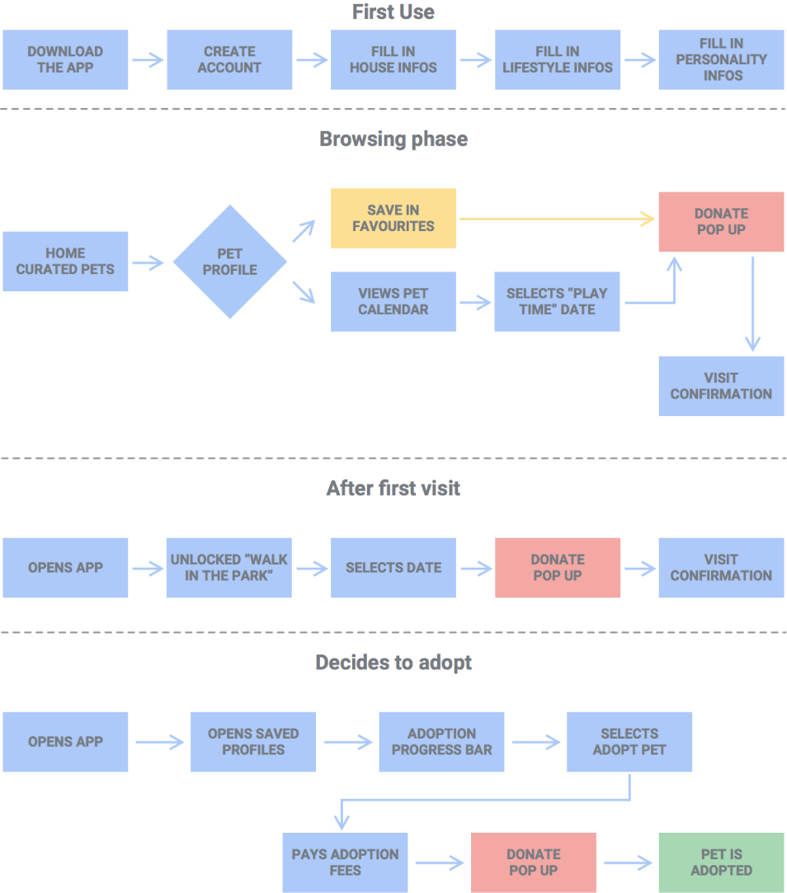

As part of my interview process for the position of Interaction Designer for the Google Cloud Platform, I was given the opportunity to design a concept product. I had the chance to choose between 3 different challenges, and - as a big animal lover - I naturally decided to pick the following one:
As this challenge aims to design a product for Google, I wanted to make sure there would be space for the output to live in within the large range of Google offering. Pet rescue services mainly surviving on donations and government fundings, Google.org felt like the natural place to provide a solution helping reduce the number of abandoned animals around the world. The product would be a chance for animal rescue programs to benefit from the technological progress and design expertise from a giant of the tech industry while providing Google with a new area to tackle in terms of social innovations.
The first thing I decided to look at was the business needs and limitations. In order to design a great experience for potential future pet owners, it was important for me to understand how shelters work. This research would also give me the chance to challenge the product and maybe spot some unexpected opportunities that could come complement the matching feature.
This first key takeaway that came out of that research is quite a positive one, as according to the Animal Humane Society, 2017 was the most successful year to date. Over 96% of the animals rescued were successfully placed, including 20,062 adoptions by new families, and the average stay for animals in shelters dropped to 10.1 days only. This is not only great news for our furry friends but also indicates a great product/market fit for the app, as more and more people get into the “adopt, don’t shop” philosophy.

Despite these encouraging numbers, shelters are still facing some major challenges.
The biggest issue is obviously covering all their expenses. Food, toys, medical care;
the list goes on and on. As most shelters run on donations and small government help,
it can be really hard to make the ends meet each month.
After the material resources, finding volunteers is another big challenge for animal
shelters. All these pets need daily attention and it doesn’t stop at just feeding them and
cleaning their spaces. To make sure pets will be easily adopted it’s really important they
get a lot of exposure to humans and get a lot of time to play and stay happy.
The people volunteering are usually outnumbered by the animals and unfortunately can’t spend
as much time as they would want with animals individually.
Another important point that surfaced from the research was the number of pets returning to the shelter. According to the AHS, 42% of adopted pets are returned after just 6 months in their new families. For these animals, their chances of surviving are instantly diminished as shelters are forced to put categorize them as “unplaceable” and automatically put them at the top of the list for euthanasia. In a lot of cases, those pets are returned because owners based their decision on the “look” of the animal instead of its personality, or they weren’t informed enough on the amount of money, time and responsibilities required. With a better understanding of the animal rescue system, it was now time for me to have a look at my users' needs.
Almost half of UK households have pets. In America, there are more pets than children. The desire to welcome a companion is widely spread across all cultures, but adopting an animal isn’t a decision one can make on the spur of the moment and needs to be carefully considered. The most important thing for people considering adoption is to find a pet that would suit their lifestyle. Everyone has different budgets, jobs, houses and it is crucial for users to commit to a pet that will fit in the family so both parts can be happy.
When committing to such a big decision, users want to be well informed. There are many pets to choose from and knowing in advance the average cost of each breed, their behaviours and specific needs before even stepping into a shelter to visit a specific animal. The second step is to get familiar with a pet after having a chance to review their profile. Most users value pet visits, as they give them a chance to get to know the exact personality of their prospective new roommate.
The last important finding that came out of that user research was the reliability of the shelter. Users want to know that the animal they’re about to adopt has been inspected properly and that the volunteers are being honest with its health status or age. People are actually happy to go through an assessment process as it shows the shelter isn’t just trying to get rid of the animal as fast as possible.
For this specific project, there is actually a secondary user to consider as much as the primary one. A user that can’t speak for himself but requires to be heard: the pets. To ensure the adoption process will result in a joyful experience for both the owner and the animal, it is essential for pets to be matched with responsible and caring owners, that will be able to provide a suitable environment, appropriate training as well as support their basic needs.
To be able to make that perfect match, all animals need to be considered and presented to prospective owners. Dogs and cats are the obvious options when people talk about pets, but there is a lot more to adopt. Snake, fish, rabbit, bird; they very occasionally end up in shelters but they could easily be adopted by people that don’t have an outdoor space for a cat or the time to walk a dog; so it’s essential that prospective owner know when some of them are looking for a new home.
After gathering all these insights and looking at the problem from the different points of view, I decided to use affinity mapping to group the key findings and find unexpected relationships between key findings that would help me shape a better solution. Here are the 3 areas I decided to focus based on the result of that exercise:
Prospective owners would get to fill in a survey inquiring about their environment and their personality before accessing to pets profiles. That way, the app could help reduce the number of animals returning to the shelter after owners have been disappointed. It will also provide more chances for animals that are less in demand to be considered for adoption.
That way, prospective owners get to spend time with the animal and get a better idea of how they would behave during daily tasks, reducing the chance of bad surprises once the pet is home. The pet could get to know their family and the shelter workers will be able to assess if they could be a great match for each other. That would also allow volunteers to be resourced in a more efficient way, they would be able to look after pets that no one came to visit that day.
Living with an animal has a price, for the shelter just as much as for owners. By providing specific and targeted opportunities to donate money and informing prospective owners on how exactly it would be spent in the shelter, they will at the same time get a better idea of the unexpected expenses of having a pet at home.
With all these considerations in mind and a better idea of the challenges, I started sketching. First thing I decided to do would be the user flow, as I wanted to see where the cost education pages and donations call to action could live while ensuring the experience could be seamless for prospective owners.
It was also essential for me to make sure I would stay focused on providing an effective MVP for this app while still keeping in mind the future of the product. Considering the brief, the core of my app is to match adopters and pets according to their lifestyle and personalities, which I used as the scenario for that user flow.
After establishing a clear road map for my solution, it was time to start sketching the screens and place the different elements that would guide future adopters through the product. Here are a few photos of the sketching process:
But my number ended on a marketing list and too many people tried to sell me microwaves. So if you have any questions, opportunities or projects you would like to discuss, just send me an email and we can have a chat.
hello@mariane.co.ukYou can read what people have to say about me, or meet me on social media: